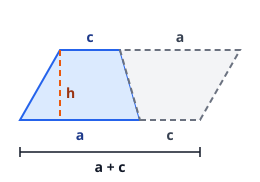

Flächeninhalt und Umfang von Parallelogramm und Trapez
Mit einem KI-Tutor lernen
Ein KI-Tutor erklärt dir diese Seite und hilft dir bei den Aufgaben. Wähl deinen Assistenten:
Mit Claude öffnen Mit ChatGPT öffnen Mit Mistral Vibe öffnen
Du nutzt dein eigenes Konto beim Anbieter. Der Assistent ist kein Angebot von lernapps.net: lernapps liefert nur Inhalte und Aufgaben. Die Wahl gilt für alle Seiten, nur auf diesem Gerät.
Ziel: Ich kann Flächeninhalt und Umfang von Parallelogramm und Trapez berechnen. Du baust auf dem Rechteck und dem Dreieck auf: Wieder zerlegst du eine Figur, bis du sie kennst.
Probier zuerst
Aufgabe
Lösung
Richtige Antwort: 18 cm²
Nach dem Umlegen ist es ein Rechteck mit 3 Reihen zu je 6 Kästchen.
Zerschneiden, umlegen, verdoppeln
In der Aufgabe oben wird aus dem Parallelogramm ein Rechteck mit derselben Grundseite und derselben Höhe . Die Höhe ist wieder der Abstand der zwei parallelen Seiten, im rechten Winkel gemessen – hier genau die Schnittlinie.

Das orange Dreieck wandert nach rechts. Die Fläche bleibt gleich.
Quelle: eigene Zeichnung. Lizenz: CC-BY-4.0.Ein Trapez hat nur zwei parallele Seiten, und . Leg ein zweites, gleiches Trapez auf den Kopf daneben. Zusammen bilden sie ein Parallelogramm mit der Grundseite und der Höhe . Das Trapez ist die Hälfte davon.

Unten liegen a und c nebeneinander. Das blaue Trapez ist die Hälfte des Parallelogramms.
Quelle: eigene Zeichnung. Lizenz: CC-BY-4.0.Der Umfang ist bei beiden Figuren die Summe der vier Seiten. Im Parallelogramm sind gegenüberliegende Seiten gleich lang, darum gilt dort .
Ein Beispiel
Ein Beet mit einer geraden Kante
Ein Beet ist ein Trapez. Die parallelen Seiten sind 9 m und 6 m lang. Die dritte Seite ist 4 m lang und steht im rechten Winkel auf beiden – sie ist also selbst die Höhe. Die vierte Seite ist schräg und 5 m lang. Sie zählt nur beim Umfang.
Antwort – Das Beet hat 30 m² Fläche und 24 m Umfang.
Höhe und Hälfte
Merke
Die Höhe steht im rechten Winkel auf der Grundseite. Eine schräge Seite ist nie die Höhe, auch wenn ihre Länge dasteht. Beim Trapez gehört das „: 2“ dazu, denn zwei Trapeze ergeben erst das Parallelogramm. Beim Parallelogramm gibt es kein „: 2“.
Jetzt du
Aufgabe
Lösung
Richtige Antwort: 32 cm²
Grundseite 8 cm mal Höhe 4 cm ergibt 32 cm².
Aufgabe
Drei Beispielaufgaben, jede mit ihrer Lösung:
Aufgabe Nr. 1
Ein Parallelogramm hat die Grundseite g = 20 cm und die Seite b = 11 cm. Die Höhe zu g ist h = 9 cm. Wie groß ist der Flächeninhalt?
Tipp
Welche Länge steht im rechten Winkel auf der Grundseite?
Lösung
- Mit g = 20 cm und h = 9 cm: – die Seite b brauchst du nicht.
- = 180 cm²
Richtige Antwort: 180 cm²
Aufgabe Nr. 2
Ein Parallelogramm hat die Grundseite g = 4 cm und die Seite b = 15 cm. Die Höhe zu g ist h = 4 cm. Wie groß ist der Flächeninhalt?
Tipp
Welche Länge steht im rechten Winkel auf der Grundseite?
Lösung
- Mit g = 4 cm und h = 4 cm: – die Seite b brauchst du nicht.
- = 16 cm²
Richtige Antwort: 16 cm²
Aufgabe Nr. 3
Ein Parallelogramm hat die Grundseite g = 9 cm und die Seite b = 12 cm. Die Höhe zu g ist h = 8 cm. Wie groß ist der Flächeninhalt?
Tipp
Welche Länge steht im rechten Winkel auf der Grundseite?
Lösung
- Mit g = 9 cm und h = 8 cm: – die Seite b brauchst du nicht.
- = 72 cm²
Richtige Antwort: 72 cm²
Aufgabe
Drei Beispielaufgaben, jede mit ihrer Lösung:
Aufgabe Nr. 1
Ein Trapez hat die parallelen Seiten a = 16 cm und c = 4 cm. Die Höhe ist h = 12 cm. Wie groß ist der Flächeninhalt?
Tipp
Zwei solche Trapeze bilden ein Parallelogramm. Wie lang ist dessen Grundseite?
Lösung
- Mit a = 16 cm, c = 4 cm und h = 12 cm:
- = 120 cm²
Richtige Antwort: 120 cm²
Aufgabe Nr. 2
Ein Trapez hat die parallelen Seiten a = 14 cm und c = 9 cm. Die Höhe ist h = 8 cm. Wie groß ist der Flächeninhalt?
Tipp
Zwei solche Trapeze bilden ein Parallelogramm. Wie lang ist dessen Grundseite?
Lösung
- Mit a = 14 cm, c = 9 cm und h = 8 cm:
- = 92 cm²
Richtige Antwort: 92 cm²
Aufgabe Nr. 3
Ein Trapez hat die parallelen Seiten a = 6 cm und c = 5 cm. Die Höhe ist h = 6 cm. Wie groß ist der Flächeninhalt?
Tipp
Zwei solche Trapeze bilden ein Parallelogramm. Wie lang ist dessen Grundseite?
Lösung
- Mit a = 6 cm, c = 5 cm und h = 6 cm:
- = 33 cm²
Richtige Antwort: 33 cm²
Aufgabe
Drei Beispielaufgaben, jede mit ihrer Lösung:
Aufgabe Nr. 1
Ein Parallelogramm hat die Seiten a = 13 cm und b = 11 cm. Die Höhe zu a ist 6 cm. Wie groß ist sein Umfang?
Tipp
Der Umfang ist der Weg einmal um die Figur. Welche Längen liegen auf diesem Weg?
Lösung
- Mit a = 13 cm und b = 11 cm: – die Höhe zählt nicht.
- = 48 cm
Richtige Antwort: 48 cm
Aufgabe Nr. 2
Ein Parallelogramm hat die Seiten a = 16 cm und b = 14 cm. Die Höhe zu a ist 4 cm. Wie groß ist sein Umfang?
Tipp
Der Umfang ist der Weg einmal um die Figur. Welche Längen liegen auf diesem Weg?
Lösung
- Mit a = 16 cm und b = 14 cm: – die Höhe zählt nicht.
- = 60 cm
Richtige Antwort: 60 cm
Aufgabe Nr. 3
Ein Parallelogramm hat die Seiten a = 14 cm und b = 12 cm. Die Höhe zu a ist 6 cm. Wie groß ist sein Umfang?
Tipp
Der Umfang ist der Weg einmal um die Figur. Welche Längen liegen auf diesem Weg?
Lösung
- Mit a = 14 cm und b = 12 cm: – die Höhe zählt nicht.
- = 52 cm
Richtige Antwort: 52 cm
Aufgabe
Lösung
Richtige Antwort: 6 cm
Zwei Trapeze ergeben 84 cm² mit der Grundseite 14 cm, also h = 84 : 14 = 6 cm.
Als Nächstes gehst du von der Fläche in den Raum und berechnest das Volumen von Quader und Würfel.
Fehler gefunden oder eine Idee für diese App?